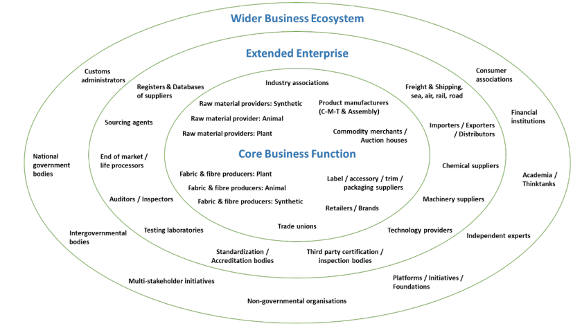
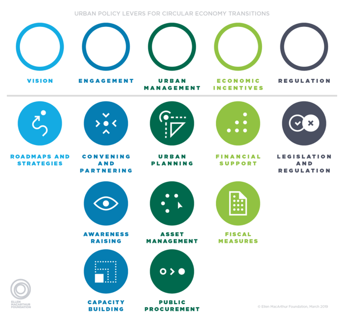

A range of actors can, and in some cases are already, having a role in aligning the UK with the principles of a circular economy (CE). A key first stage in any CE intervention modelling is to map who the relevant stakeholders are and define the activities they undertake which can impact flows and stocks of materials, financial value and information. This provides a basis to assess drivers and stress points, power relations and information gaps and failures which can be relevant to designing interventions. This section sets out categories of actors critical to CE transformation in the UK and describes the types of influence they can have/functions they can play.
Value chains actors and activities
“The question of how to overcome…barriers to a circular economy is multifaceted. The role of policy is central on many levels – international, regional, national and city – but other stakeholders play a crucial role as well, the most important being business organizations, science and technology and civil society” (Wijkman, 2021).
“The whole spectrum of stakeholder groups in the UK need to be involved…and make their contribution” (Wiedmann et al. 2006, p. 13).
Circular systems, whether technical or biological, incorporate a range of activities that reduce demand for material inputs and revalorise, recover or reuse materials already in use (Wentworth and Burgon, 2016). For example, a technical cycle may involve a car being well maintained and then resold, its components being reused and constituent materials (Wentworth and Burgon, 2016). Moving to a more circular economy will require shifts in practices of actors undertaking these activities as well as linked technical and economic change (Wijkman, 2021). In addition, it may involve the emergence of new actors and stakeholders and redistribution of value (Zils and Hopkinson, 2023c). Some of this may come about voluntarily including as part of profit-seeking by firms and changes in consumer preferences, however processes of engagement, incentivization and more hierarchical forms of regulation are likely to also be needed including due to needing to overcome a range of market, system, transition and government ‘failures’ which exist (van Ewijk, 2018. see Section 4).
There are different ways to map and describe actors and stakeholders of relevance to value chains and CE. The UNECE (2021) programme on sustainability in value chains proposes a three-way clustering (Figure 10):
The core value chain business actors and activities involved in the production of products and service including users and end of life recovery and processors (to which we add consumers);
The extended network of actors and activities that enable the value chain to function including certification bodies, technology providers, auditors; and
A wide business ecosystem that creates and shape/influence the enabling conditions for value chains, actors and activities including policy, regulation, academia, think tanks and financial institutions.
Actors across these groups undertake functions that can contribute a UK CE to different extents, parameterised by the types of activities they undertake, responsibilities, incentives and resources and including as both a source of regulation and key target of it. For this report, we have used their diagram as a reference guide, and focused on a smaller sub set of categories considered most relevant to UK CE policy.

The Ecosystem Model (UNECE, 2021)
We describe the ways in which these groups of actors and activities can contribute to a more circular economy across the countries making up the UK below.
Wider business ecosystem stakeholders
Starting from the outermost concentric ring in the ecosystem model, ‘wider business ecosystem’ stakeholders such as government/state bodies, non-governmental organisations and academia can shape and parameterise the landscape in which value-chain-activities occur in various ways and in many cases, have a mandate or responsibility to do so.
Over 80% of UK business leaders surveyed in a 2022 poll agreed that government policies are required to bring about the economy-wide changes needed to tackle climate change, as a closely linked area to the CE (CISL, 2022). Regulation is often thought about solely as control by a government furthermore, with the OECD (2021a) defining regulation as ‘instruments by which governments set requirements on enterprises and citizens’. Given their responsibilities and resources, primary avenues of influence available to central governments across the UK include:
the ability to issue legislative and policy instruments prescribing or prohibiting certain behaviours or technical conditions;
the distribution or redistribution of financial and other resources which can enable activities to be undertaken;
the means to collate and generated information by being in the centre of knowledge networks; and
the capacity to create organisations conducting activities such as public bodies or committees (Steurer, 2013; Duit, 2014). This includes at the international level such as participating in the G7 Alliance on Resource Efficiency.
Since the 1990s, many areas of law and policymaking relating to waste and resource management have been devolved across the countries making up the UK. This means that central government departments with jurisdictions relating to CE exist not only in the UK Government (as the central executive authority of the United Kingdom of Great Britain and Northern Ireland) but also in the Scottish Government, Welsh Government and Northern Ireland Executive - though devolution has been asymmetrical in the powers devolved across the four nations. With devolution, different stated objectives relating to the CE, approaches to achieve objectives and varying levels of activity have also emerged (OECD, 2022; Zils et al. 2023).
Key strategies published by governments across the UK include, the Defra 2018 Resources and Waste Strategy for England recently updated by the report ’Maximising Resources, Minimising Waste, which sets out the future actions government will take to maximise resources and minimise waste across key resource intensive sectors such as construction, textiles, food and drink, packaging and electricals. Scotland’s firs CE strategy was published in 2016, Making things last, while a Scottish Circular Economy Bill was published in June 2023, with proposals for statutory targets and indicators to measure progress towards reducing waste and the national carbon footprint. The Welsh Government published its Circular Economy Beyond Recycling report in June 2021, to track progress of their circular economy strategy. Beyond Recycling included indicators to scale up prevention and re-use, and placed circular economy beyond a purely material focus by linking to the national indicators under the Well being of Future Generations Act. The Northern Ireland Department for the Economy is currently consulting on a circular economy strategy for NI, with a focus on innovation, sustainable production and consumption.
The structure of local government varies by country in the UK, with N. Ireland, Scotland and Wales having a single level of local government bodies while in England there is a combination of single-tier authorities in some areas and two-tiers of local government in others (OECD, 2022). Local authorities (LA) across the UK (referred to as local councils in N. Ireland) have statutory responsibility for council services including the collection and treatment of local-authority collected waste (LACW) and street sweepings (Rezaie et al. 2022). Historically, LAs organised as either individual or combined waste collection and/or disposal authorities have had localised discretion over budgetary allocations for waste management, materials collected, how frequently and treatment arrangements (Abbott, Nandeibam and O’Shea, 2011). There has been a move to greater consistency of these aspects in recent years through The 2021 Environment Act covering England and with similar interventions planned or in place in Scotland, Wales and N. Ireland.
In addition to potentially altering council services for which they are responsible, LAs as well as regional bodies and cities can help provide other enabling conditions for a CE transition (Figure 11) (EMF, 2019). This includes through setting ambition and direction (e.g. theWest Midlands’ Circular Economy Routemap), community engagement, financial resource allocation, advice and in-kind support (e.g.ReLondon’s Business Transformation programme), planning, the management of public assets and as a purchaser of goods and services. Reports submitted by signatories to theCircular Cities Declaration show key trends including growing national and supra-national support to cities, the adoption of circular strategies and roadmaps to steer the transition (Abu-Bakar, 2023), investment in infrastructure, using public procurement to achieve objectives, establishing innovation programmes and projects and empowering citizens with a particular focus on the construction and food sectors (CCD, 2022).

Urban policy levers for circular economy transitions (EMF, 2019)
Through growth in opportunities for participation in the policymaking process and outside of it, civil society actors have acquired greater status in the landscape of environmental regulation. ‘Civil society’ broadly refers to stakeholders (interacting as) neither the government nor market and which includes the general public and those organised. Organised publics in the form of non-governmental organisations (NGOs) perform a variety of regulatory and steering functions relevant to the CE that include:
Inputting to agenda-setting and policy formulation via government facilitated routes of engagement such as consultations and outside of these;
Collecting, analysing and disseminating information e.g. to monitor compliance;
Coordinating with other actors e.g. the Circular Economy Task Force convened by the Green Alliance to broker greater collaboration within sectors, improve product design and company reporting;
Pressurising firms and the government (such as through organising boycotts or legal routes e.g. the work of Client Earth) and whistle-blowing; and
Developing localised schemes, including inputting to production activities (Maitre-Ekern and Dalhammar, 2019).
In addition, NGO influence has increasingly taken on new forms such as establishing unilateral partnerships with firms and creating, promulgating and monitoring formalised standards. In many cases, this has arisen through the need to fill regulatory gaps emerging e.g., at the international level, such as the Forest Stewardship Council (Klooster, 2005) and the Aluminium Stewardship Initiative. Particularly prominent NGOs in the CE area include those closely tied to UK government bodies such as WRAP and Zero Waste Scotland as well as the Ellen MacArthur Foundation, the Green Alliance, Business in the Community and Circle Economy. Philanthropic groups which blur the line between public and private can too be active.
The frequent global nature of environmental issues and upward scalar shifts in the governance landscape has seen supranational bodies at the international and regional levels take increasingly key positions in trying to tackle environmental pressures due to human activities. For instance, the United Nations’ Environmental Programme (UNEP) has played a role in coordinating international scientific advisory bodies such as the IPCC and establishing international frameworks for climate change mitigation and adaptation, desertification and biodiversity. UNEP also has an important role in brokering information (e.g. the Global Material Flows database) and wider thought leadership.
Another particularly active supranational body in the area of CE is the World Economic Forum (WEF), with programmes developed including the Platform for Accelerating the Circular Economy (PACE) which works to develop commitments towards the circular economy via a range of value-chain partnerships. Other international bodies such as the World Bank are now active in this area through the production of reports and other outputs (World Bank, 2022). Many international agencies and organisations covering finance, shipping, energy and food production also have the potential to contribute to more circular and sustainable practices via their own routes of influence.
At a regional level, the UNECE is leading on many CE issues such as relating to data and value chain mapping, whilst the Circular Step dialogue platform brings together CE focal points from over 27 UN countries to exchange policy developments, innovations, evidence of what works on the ground and build capacity to mobilise actions at various scales and sectoral ambitions, with the CE-Hub acting on behalf of the UK. The United Nations Economic Commission for Europe (UNECE) and OECD are also preparing joint guidelines on measuring circular economy,comprising core and complementary indicators, with a view to developing implementation guidelines in 2024.
Making a shift from a linear to a circular economy represents a profound shift in the way we think about and the actions we all take in every facet of the economy and society. To make such a transformation requires education and training from preschool through to post 16 technical training, university education, apprenticeships, in-work skills and training programmes, as well as informal lifelong learning for everyone. Countries such as Finland (Tiippana-Usvasalo et al. 2023) have started this process, and case examples can be found in schools, colleges and universities and many businesses through organisations supported by the EMF.
Overcoming barriers to, and designing enablers for, CE adoption and implementation will require new technologies, scientific solutions, social innovations, engineering and manufacturing systems, digital and data-driven approaches. This requires a clear focus on impact and outcomes at various scales, while dealing with complex and contested trade-offs and systems shifts as CE scales up. To overcome these barriers, an engaged research community is required. This includes universities, companies, government departments, NGOs and citizen groups, combining and collaborating in new, inter and trans-disciplinary formations. Collaborations should hold a shared or consistent perspective on the end states to maximise the potential from CE. Academic researchers and research programmes such as NICER, contribute to, among other things, the ability to evaluate and evidence the benefits, costs and risks of different CE options, including at the direct request of government policymakers.
The extended enterprise
The ‘extended enterprise’ consists of organisations such as auditors and standardisation bodies, testing labs, logistics and insurance firms and technology providers who through their activities, goods and services support, administer and enable value chains to operate and function. We outline the potential role of several of these actors below, while other relevant actors to CE transformation include ratings agencies and wider service suppliers such as the insurance sector (Farkova et al. 2023).
Standardisation bodies help unify terminology and play an important role in providing frameworks and guidance to support, among other things, consistent testing, measurement, inspection and validation assessments as well as the uptake of relevant product requirements and information provision as part of environmental management standards. All of these can support the development of a more circular UK economy, including through the more efficient exchange of information between market actors by removing ambiguity in terms used, building trust and reducing risk.
An example of a private standards-issuing body is the British Standards Institution (BSI). BSI standards are typically broad in nature (covering e.g. principles and terminology) and for use by technical committees or actors when producing their own horizontal, generic or product-specific standards. Examples of BSI standards relevant to the circular economy include:
In addition, the widely used ISO family of industry-based environmental management standards have been extended to include circular economy guidance such as:
ISO 59020 – Provides a framework for measuring and assess circularity in organisations; and
ISO 59000 – To set a conceptual framework of terms, measures, and indicators relating to the CE concept.
ISO and BSI standards are voluntarily adopted and maintained by private organisations. They are also widely accepted by public actors, adding to their perceived legitimacy and are therefore sometimes referred to as a form of ‘hybrid governance’ between actors (Falkner, 2003).
Technology providers can work to fill new markets generated by government regulation or proactively offer a technology solution to core market actors and those throughout the business ecosystem. Government has an important role here, in regulating claims and in providing a stable environment for innovation and reducing investment uncertainty. Innovate UK, for example is the UK’s national innovation agency, who support business-led innovation in all sectors, technologies and UK regions and provide private investor insights (Innovate UK, 2023). Private sector entities can also anticipate future government regulation or otherwise. For example, QSA is a CE business modelling company, funded by IUK through the NICER CR&D fund to develop data-led evidence to support future EPR for the British Fashion sector. Examples of relevant technology providers include those working in the area of data (e.g., distributed ledgers, AI, IoT, sensors), for example, SAP and Topolytics, who offer products to support improved material tracing and internal accounting.
With money the lifeblood of market-based economies such as the UK, the finance sector holds a strategic role in driving a more circular economy. Public equity, private market funds and wider debt and equity instruments are frequently needed to develop and scale CE interventions, while a lack of finance frequently is quoted as a barrier to scaling or innovation in the first place (Mähönen, 2019). Investments in the linear economy can also run counter to CE aims, suggesting the need for a reconfiguration in places. Investor action on the circular economy is relatively nascent, but as with climate considerations, may be expected to come in the form of commitments and policies by firms and bodies in the finance sector as well as the uptake of metrics and ESG criteria (UN PRI, 2022). Central banks and wider financial supervisory bodies ranging from the international to national scale can also contribute to aligning the financial sector with societal objectives given their uniquely close links to capital markets (Couto, 2023).
Core market actors
Core market (CM) actors including producers such as raw material providers, manufacturers and recyclers on the one hand and consumers on the other, are bound together through the production, processing and use of products along a given value chain.
Producers
In the CE-Hub’s value chain taxonomy, core-market actors undertaking production activities across the linear value chain from mining through to product distribution, collection and disposal are primarily non-financial corporations as well as households as producing units (B2B, B2C and B2G). For reverse loop activities, non-financial corporations and households (as producers) are too particularly active, but as are NGOs/NPISHs and government bodies in some cases. Shifts in business models have been conceptualized in different ways, ranging from symbolic and philanthropic on one end to integrative and finally innovative or transformative - though the development of new business models to solve issues and leverage CE approaches for competitive advantage (Clarkson, 1995; Halme and Laurila, 2008; Hopkinson and Zils, 2023a; 2023b). The adoption of more circular business models can occur at the firm or industry level in the absence of regulation for reasons including (Ambec and Lanoie, 2008; EMF, 2015):
Reducing production costs and increasing competitiveness;
Gaining differentiation advantages and entering new markets to increase sales and revenues;
Establishing a positive corporate image and brand integrity;
Managing risks threatening financial returns, including on the supply side to physical inputs or financing, on the demand-side such as changing preferences and from wider stakeholders e.g. regulators; and
Influences from organizational culture and normative drivers, including non-instrumental values.
We explore the role of key production sectors further below.
Metallic mineral extraction to meet UK demand for metals is almost if not entirely met by overseas extraction currently, with no domestic extraction of iron ore reported to have taken place in the UK since 2008, UK domestic extraction of non-ferrous metals in 2021 standing at just 1,300 metric tonnes and no bauxite/other alumina nor copper reported to have been extracted in the UK over the 30 year period since 1992 (ONS, 2023a). In 2021, mining and quarrying of non-metallic minerals contributed £19.5 billion to UK GVA, with 205 million tonnes of non-metallic minerals extracted in the same year and of which over 90% was sand, gravel, limestone and gypsum. 70.4 million tonnes of ‘fossil energy materials/carriers’ were also extracted in the UK in 2020 (ONS, 2023). While industrial mineral extraction in the UK makes up a relatively small proportion of national GVA, foundational industries such as chemicals, ceramics, paper, glass and cement process large quantities of materials (e.g. around 28 million tonnes of material output per annum in the UK) and emit 50 million tonnes of CO2 per year, or 10% of the total CO2 emitted by UK homes and businesses. Changes in production practices in line with CE principles among these industries may hold decarbonization potential.
Agriculture, forestry and fishing contributed approximately 3 billion GBP to UK GVA in 2021, with 136 million tonnes of biomass extraction/cultivation taking place in the UK in 2021, 95% of which was crops or crops residue and 6 million tonnes of wood (ONS, 2023a). Approximately 71% of UK landcover is managed by farmers and other land managers and these activities have a significant impact on people’s health, access to the countryside, land, air and water quality and biodiversity. Agricultural, forestry and fishing practices impact on energy and material inputs furthermore (fertilisers, pesticides, automation), wildlife and fishery populations and the benefits of numerous ecosystem services. Developments around regenerative agriculture (EMF, n.d.), blue economy (LSE, 2023) and nature-based approaches to flood risk (Hopkinson et al. forthcoming) highlight the potential for applying CE principles to the biological sphere of the economy, for higher overall value creation across many different value chains.
‘Manufacturing’ covers a broad number of activities, ranging from the creation of highly specialised metal components for aerospace to the production of fast fashion garments. The manufacturing sector forms a key component of the UK economy, with manufacturing product sales at £429.8 billion in 2022, and over 2.5 million people employed (ONS, 2023d; ONS, 2023e). Linear business models in the manufacturing phase involves a company procuring and sourcing raw materials, components, and semi-finished products from the upstream market and employing labour, capital and knowledge inputs to assemble and deliver products sold to users or consumers in a downstream market with little consideration for value recovery. The nature of competition in a linear throughput arrangement typically leads to two issues:
low cost, point of sales, transaction focus (versus quality or longevity)
no systematic end-of-use recovery and re-circulation of value
In many cases, there is no natural incentive for manufacturers to improve durability and/or to design products to be of higher (perceived) value at end of use. For some materially intensive products, such as a car, the embedded value of products at end of use is apparent and substantial and there are many value loops that take advantage of the residual value at the end of customer use. These include second-hand car dealerships, repair and refurbishment shops. At the end of product life there are very widely established scrap metal dealerships and recycling operations that capture value from the components and raw materials. For many other products however, there is no natural incentive for manufacturers to design products to maintain their value, resulting in limited revalorisation opportunities. An important example of this structural market leakage is in plastic packaging or plastic use in general where an estimated market value in excess of $80-$120 billion is disposed of every year (EMF, n.d.).
A key barrier to more circular practices in businesses is the economics as well as technical and additional aspects (explored further in Section 4) which mean incumbent firms, especially larger businesses can’t be relied upon alone to integrate CE practices and government at speed. Start-ups and SMEs, which make up the larger majority of businesses in all national economies, can be more agile and able to spot opportunity, take risks or fail fast, and therefore have the potential to develop potential key solutions. NICER CECs and the CE-Hub have featured and showcased many innovative start-ups and SMEs operating in different sectors and value chain segments, including through Collaborative Research and Development funding with Innovate UK. Trade bodies, such as AMDEA and network organization, such as Federation of Small Business, provide important gateways to reach this huge, diverse, and often difficult to reach sector of the economy.
Retailers act as the interface between producers and consumers, influencing demand for goods and services and how they are delivered. Retailers are therefore subject to a range of pressures, with growing environmental awareness, stakeholder pressures and government rules and regulations reportedly encouraging e.g. UK retailers to embrace circular business models in their operations in some sectors (Upadhyay, Kumar & Akter, 2021). Retailers can also influence post-consumption phases through the adoption and promotion of alternative business to the traditional sales-ownership transaction. Various forms of pre-competitive collaboration can be seen among these actors such as the ‘Retailer Net-Zero Collaborative Action Plan’ facilitated by WRAP and WWF to align carbon accounting approaches.
Waste management companies are a key group who manage and coordinate the collection, processing and disposal of products and materials from different economic sectors and households, frequently on behalf of LAs. They do so as private entities ranging from small-medium enterprises (SMEs) to multinational corporations, for whom the need to generate profit including via markets for secondary materials, drives investment and interest in public and private sector contracts. Recycling, waste and wastewater management activities in the UK generated a gross value added (GVA) of £16.1 billion in 2020 and were associated with 156,000 FTE job roles (ONS, 2023c). Data on the flows of wastes held by many of these companies also form a key building block for understanding the quantity, quality, spatial distribution and disposal pathways for products and materials of interest. It should be noted that the environmental performance of waste management companies varies significantly and criminality within the sector is increasing (Environment Agency, 2021).
While aligning the UK economy with CE principles can be expected to involve changes in the practices of industries already represented along value chains such as manufacturers and retailers, structural shifts can be also be anticipated in other areas of the economy including the emergence of new sectors. For example, a growth in an assortment of activities which constitute the CE’s ‘reverse loops’ and involve resource flows otherwise discarded, being intercepted and processed in a way that retains the value of materials, components or products in the economy, including collection. There are various schema to classify reverse loops, including the following activities (based on Cramer (2017) and Kirchherr, Reike and Hekkert (2017)):
Maintenance/repair – fixing a defective product so it can be used with its original function;
Reuse/resale - a further use of a product still in good condition;
Refurbishment - restoring an old product for further use;
Remanufacturing - using parts of discarded products within a new product with the same function; and
Recycling - processing products or components into their constituent materials to obtain the same (high grade) or lower (low grade) quality.
It should nevertheless be highlighted that maintaining or circulating materials and products that are toxic, hazardous, or more environmentally damaging than new products is inconsistent with foundational CE principles.
Consumers
In addition to influencing value-chain activities as citizens through exercising the right to vote, advocacy or reputation shaming, households can also drive change through their consumption behaviours (Newell, 2008). For instance, consumers may: move patronage to a retailer who offers refillable solutions; purchase second-hand or remanufactured goods instead of new; or buy products less often and seek out repair opportunities for goods currently held. The responsiveness of consumers is a key determinant of the effectiveness of interventions such as mandatory information disclosure via labelling furthermore. Environmentally significant household behaviour change can be classified in different ways, including, for example, the avoid-shift-improve model based on:
Avoiding unnecessary consumption or impactful behaviour e.g. reducing food waste;
Shifting consumption activities to less environmentally impactful alternatives e.g. sharing instead of buying new; and
Improving environmental performance of activity in question e.g., using BEVs instead of ICEs.
Of the actors outlined, central and local government though not the only source of regulatory authority/capacity, have a prominent and critical role in the regulatory landscape for a UK CE. This including through an ability to issue laws, redistribute resources, provide services and set direction. The next section therefore looks in more detail at the instruments available to these bodies to drive change.
Back to top